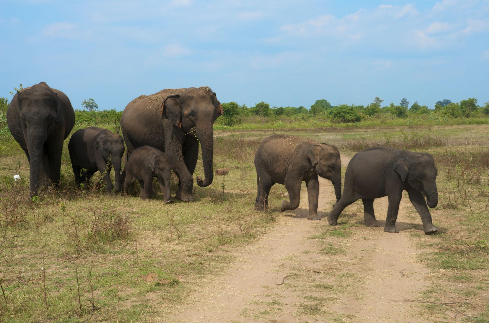
Untouched wilderness • Majestic wildlife • True safari experiences
Sri Lanka is one of the best places in Asia to see wildlife in its natural habitat — all within short travel distances. From vast national parks to peaceful wetlands, the island offers unforgettable encounters with nature. Watch wild elephants roam freely across open plains, witness the world-famous elephant gathering at Minneriya National Park, and experience thrilling safaris in Yala National Park, home to one of the highest leopard densities on earth. Visit Udawalawe National Park for close views of majestic elephants and diverse birdlife. These parks are not zoos — they are wild ecosystems where animals live freely, offering real, raw, and respectful wildlife experiences guided by expert trackers. ✨ In Sri Lanka, nature isn’t a side trip — it’s part of the journey.
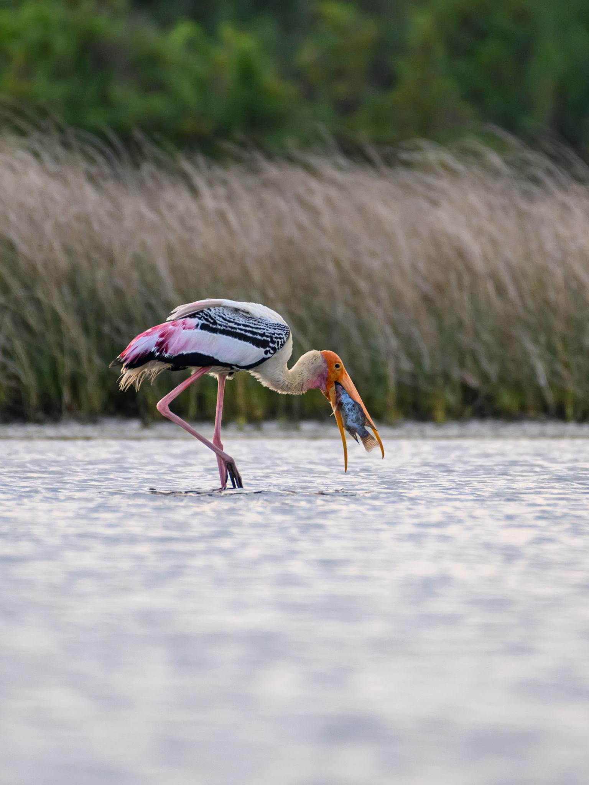
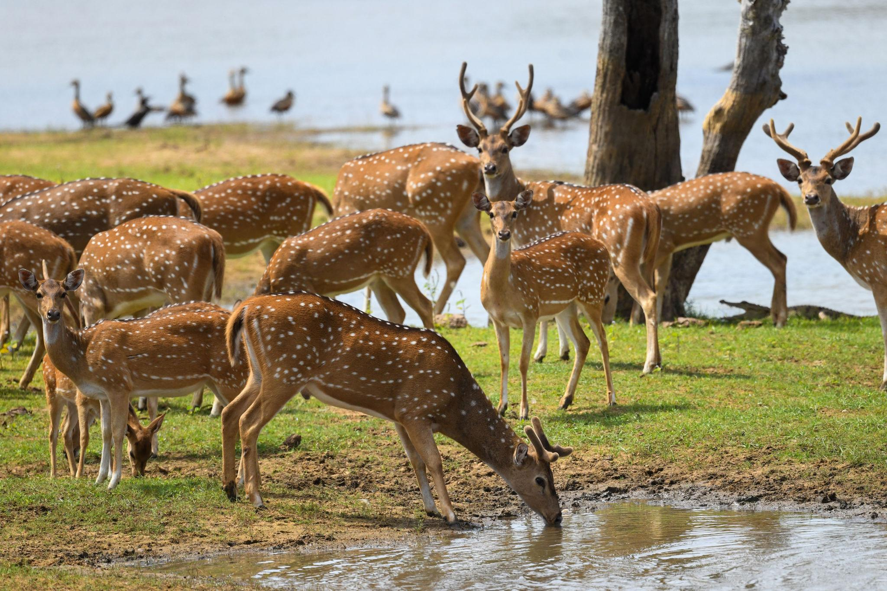
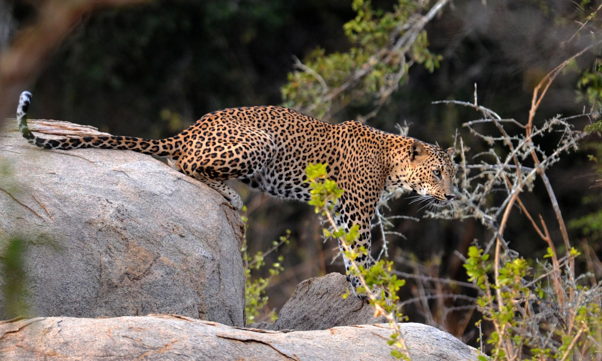
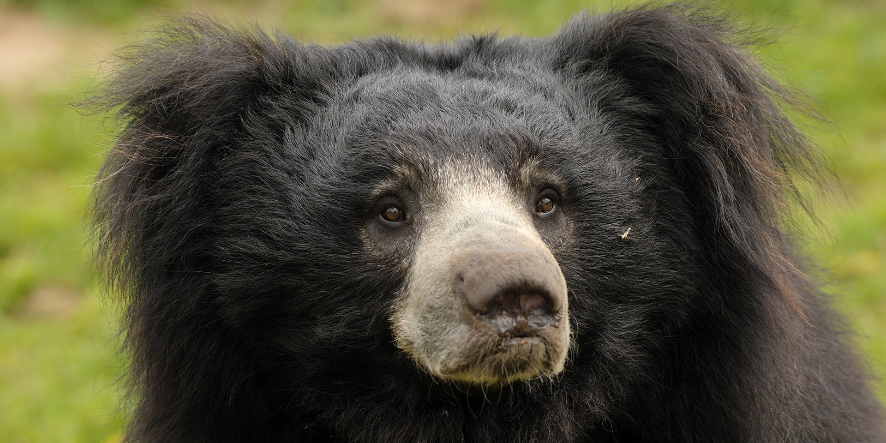
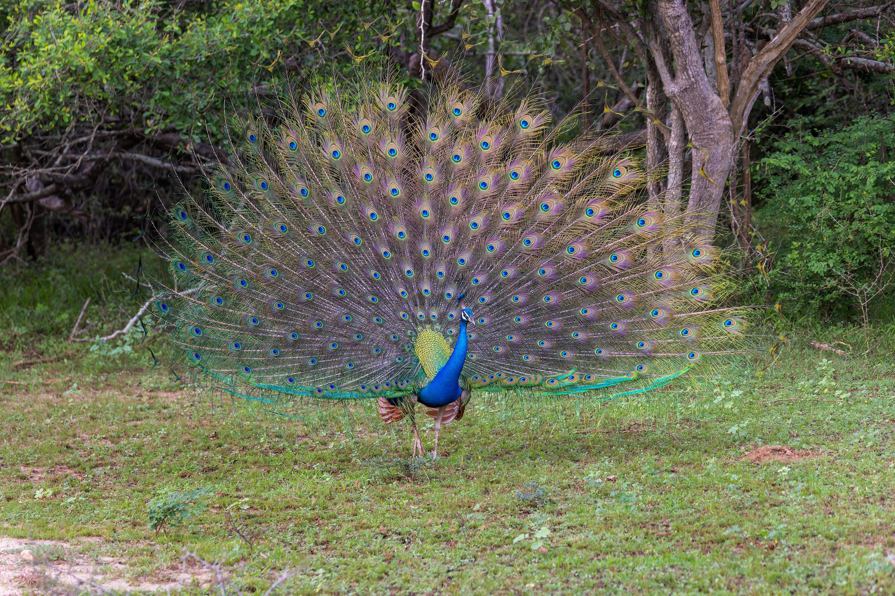
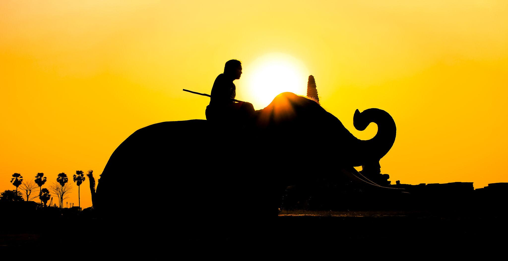
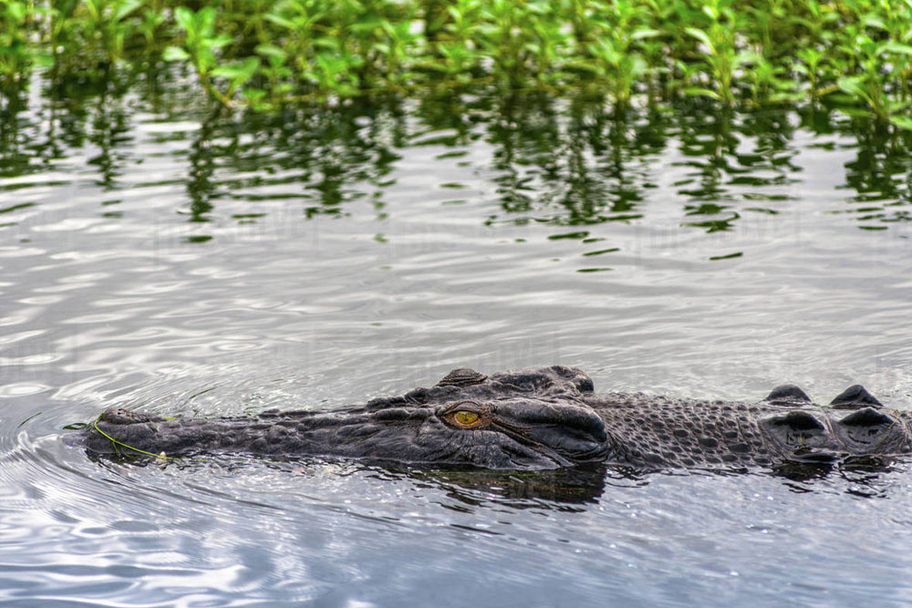
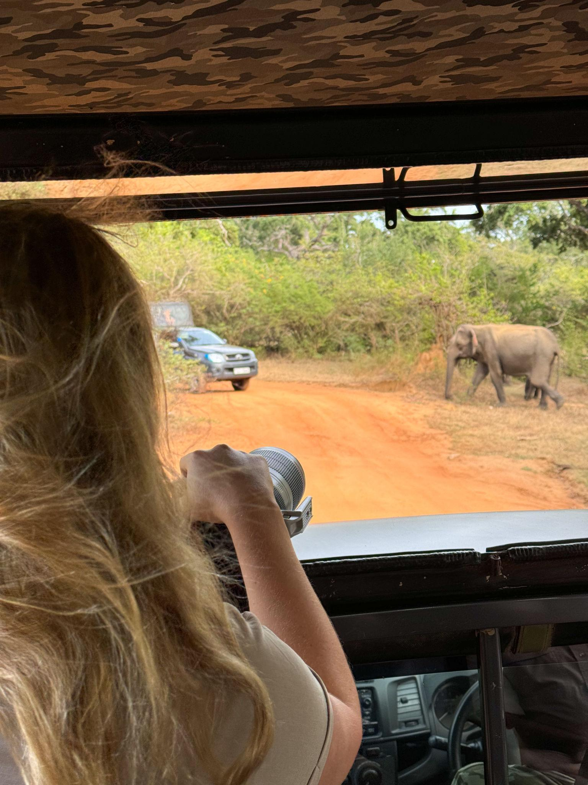
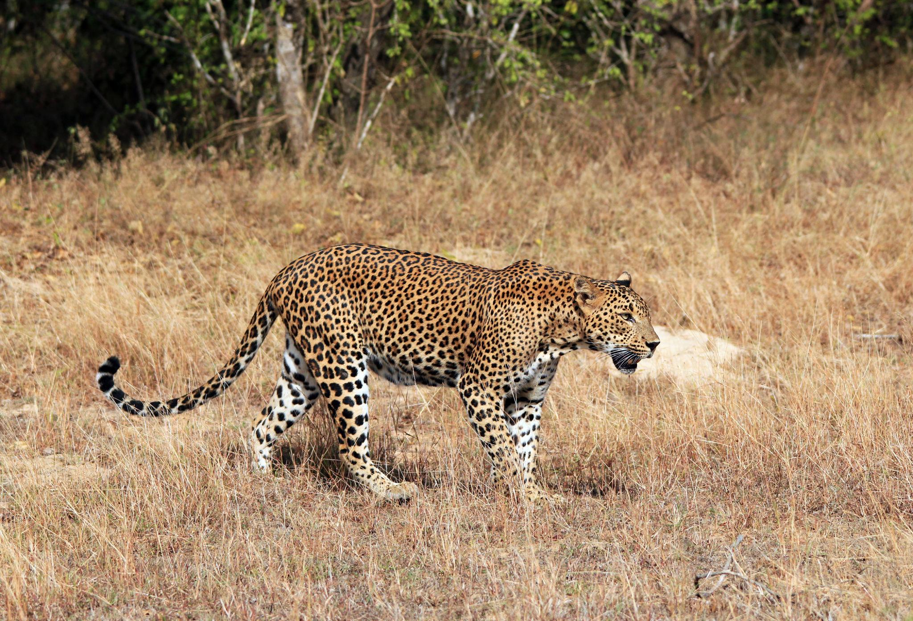
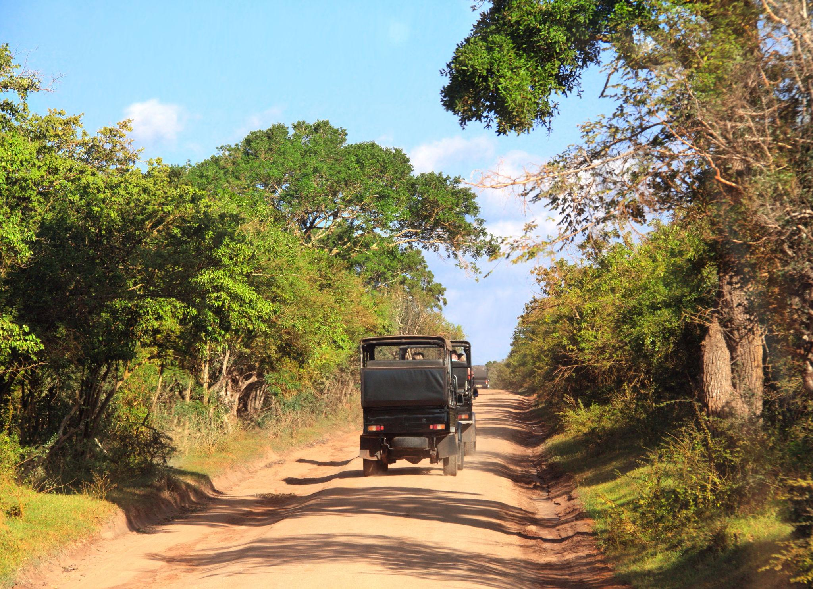
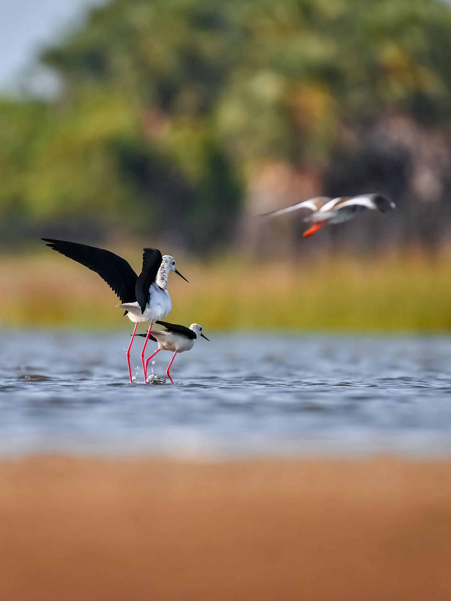
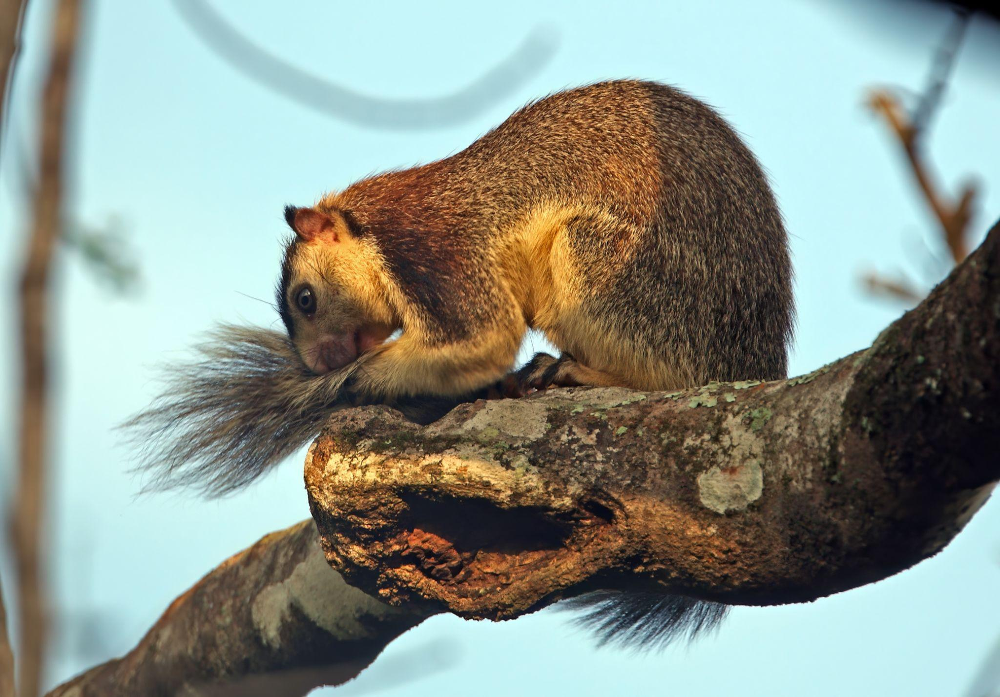
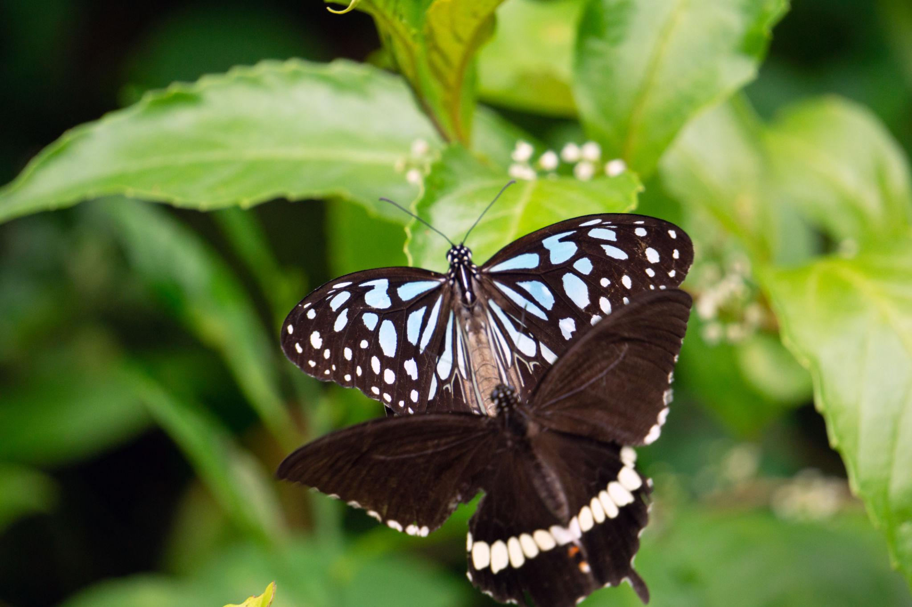